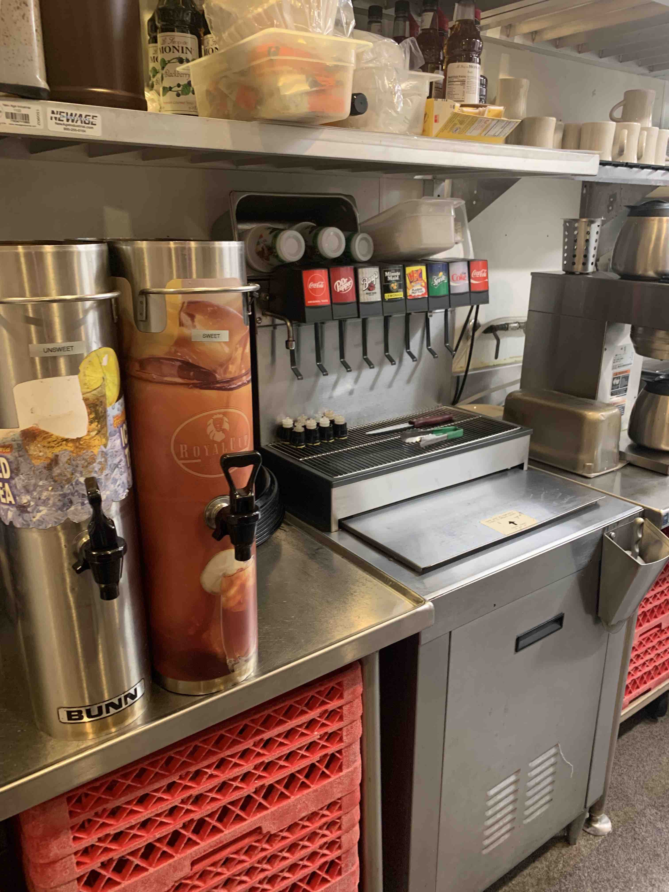
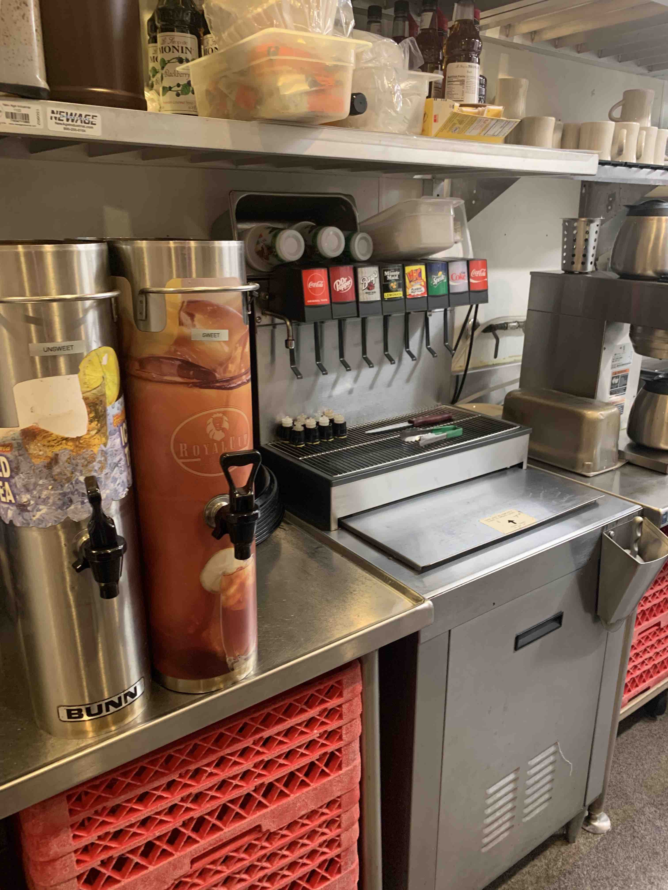

- Turn the key on the right side of the station to turn it off, and place the key into soda station 2
- Fill up the ice.
- Take the lemons and put a plastic lid on the container.
- Put the lemons in the walk-in, making sure its labeled!
- Empty out the ice from the lemon container and fill it with hot water from the coffee station
- Take off the nozzles (both clean and black) from the soda machine (gentle, they come off easy) and put them into the hot water to soak.
- Tip: Throw your knife and tongs into this hot water bath, if dish is busy you won't see it for a while.
- You need to clean a sweet and unsweet tea dispenser, make sure you are not leaving the serving staff with no tea!
- Empty out the lowest tea's you found into the dish straining sink. (right behind the wall!)
- Bring over the full tea dispensers to soda 2 so that your fellow serving staff don't need to walk accross the alley to get a tea!
- Take off the tea nozzles and take them apart. Add them to the hot water bath with the other nozzles.
- Use hot water to clean the tea dispensers, ensuring no sticky remnants exist inside or out.
- You may put your clean tea dispensers either next to soda 1 or to the right of the kids fridge. We just want them to be out of the way!
- take apart the soda station grate:
- Remove the metal grate
- The back wall behind the soda levers should lift up, and out of the station.
- Remove the plastic bottom that leads to the drain.
- Clean these three components very well, they can get very sticky.
- While you have the plastic component removed, you can clean under it. (This can get gross fast, so don't skip this!!)
- Return the components in order.. plastic first (make sure drain is aligned with hole), metal back wall second, and metal grate third
- The back wall should slot up into the top, make sure it is properly seated or else it could get stuck!
- Wipe off the station. Soda levers included!
- Stock up kids cups, lids (to the left), napkins, and straws.
- Make sure you have a knife and tongs, and your clean metal third pan.
- Bring up and put away any glasses that dish may have for you.
- Dump your nozzles into the station grate, and leave them off. Even the tea nozzles. To prevent mold, we leave them off to dry over-night.
- Your station should look like the picture above. (Except with the tea nozzles off and on the grate)